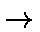

The SADDLE technique is used for locating a transition state, given two geometries, one on each side of the transition state. In order for the SADDLE technique to work, the Z-matrix must be specified as follows:
From this specification, it follows that if two molecules react to form one molecule, then the first geometry must contain all the atoms of the two molecules. The easiest way of defining such a geometry is to define one molecule, then have an unusually long bond-length from one atom in the first molecule to the first atom in the second molecule. The two molecules together form the first geometry. Likewise, if a molecule decomposes, e.g. C2H5OH C2H4 + H2O, every atom in the product must be defined in the same order as the atoms in the reactant.
An example of a data-set for a SADDLE calculation, modeling the ethyl radical hydrogen migration from one methyl group to the other is given in the Figure.
Figure:
Example of data for SADDLE calculation
Line 1: UHF SADDLE Line 2: ETHYL RADICAL HYDROGEN MIGRATION Line 3: Line 4: C 0.000000 0 0.000000 0 0.000000 0 0 0 0 Line 5: C 1.479146 1 0.000000 0 0.000000 0 1 0 0 Line 6: H 1.109475 1 111.328433 1 0.000000 0 2 1 0 Line 7: H 1.109470 1 111.753160 1 120.288410 1 2 1 3 Line 8: H 1.109843 1 110.103163 1 240.205278 1 2 1 3 Line 9: H 1.082055 1 121.214083 1 38.110989 1 1 2 3 Line 10: H 1.081797 1 121.521232 1 217.450268 1 1 2 3 Line 11: O 0.000000 0 0.000000 0 0.000000 0 0 0 0 Line 12: C 0.000000 0 0.000000 0 0.000000 0 0 0 0 Line 13: C 1.479146 1 0.000000 0 0.000000 0 1 0 0 Line 14: H 1.109475 1 111.328433 1 0.000000 0 2 1 0 Line 15: H 1.109470 1 111.753160 1 120.288410 1 2 1 3 Line 16: H 2.109843 1 30.103163 1 240.205278 1 2 1 3 Line 17: H 1.082055 1 121.214083 1 38.110989 1 1 2 3 Line 18: H 1.081797 1 121.521232 1 217.450268 1 1 2 3 Line 19: O 0.000000 0 0.000000 0 0.000000 0 0 0 0 Line 20: |
Details of the mathematics of SADDLE appeared in print in 1984 (M. J. S. Dewar, E. F. Healy, J. J. P. Stewart, J. Chem. Soc. Faraday Trans. II, 3, 227, (1984)), so only a superficial description will be given here.
The main steps in the saddle calculation are as follows:
The mechanism of 5 involves the coordinates of the moving geometry being perturbed by an amount equal to the product of the discrepancy between the calculated and required P and the vector R.
SADDLE works with Cartesian coordinates, so before the calculation starts, the two geometries are superimposed as much as possible. This is done as follows:
The two geometries must be related by a continuous deformation of the coordinates. For this, internal coordinates are unsuitable in that while bond lengths and bond angles are unambiguously defined (being both positive), the dihedral angles can be either positive or negative. Clearly 300 degrees could equally well be specified as -60 degrees. A wrong choice of dihedral would mean that instead of the desired reaction vector being used, a completely incorrect vector was used, with disastrous results.
To prevent this, a SADDLE calculation will always convert coordinates into Cartesian before starting the run. If symmetry is to be used, then the geometry must be supplied in Cartesian coordinates, because internal symmetry relations are not meaningful here.
A particularly irritating phenomenon sometimes occurs when a transition state is being refined. A rough estimate of the geometry of the transition state has been obtained by either a SADDLE or reaction path or by good guesswork. This geometry is then refined by TS, SIGMA or by NLLSQ, and the system characterized by a force calculation. Remember that NLLSQ is preferred over SIGMA when the GNORM is large, so NLLSQ is probably the method of choice, if for any reason TS does not work. It is at this point that things often go wrong. Instead of only one negative force constant, two or more are found. In the past, the recommendation has been to abandon the work and to go on to something less masochistic. It is possible, however, to systematically progress from a multiple maximum to the desired transition state. The technique used will now be described.
If a multiple maximum is identified, most likely one negative force constant corresponds to the reaction coordinate, in which case the objective is to render the other force constants positive. The associated normal mode eigenvalues are complex, but in the output are printed as negative frequencies, and for the sake of simplicity will be described as negative vibrations. Use a graphical user interface program to display the negative vibrations, and identify which mode corresponds to the reaction coordinate. This is the one we need to retain.
Hitherto, simple motion in the direction of the other modes has proved difficult. However the DRC provides a convenient mechanism for automatically following a normal coordinate. Pick the largest of the negative modes to be annihilated, and run the DRC along that mode until a minimum is reached. At that point, refine the geometry once more using TS and repeat the procedure until only one negative mode exists.
To be on the safe side, after each DRC+TS sequence do the DRC+TS operation again, but use the negative of the initial normal coordinate to start the trajectory. After both stationary points are reached, choose the lower point as the starting point for the next elimination. The lower point is chosen because the transition state wanted is the highest point on the lowest energy path connecting reactants to products. Sometimes the two points will have equal energy: this is normally a consequence of both trajectories leading to the same point or symmetry equivalent points.
After all spurious negative modes have been eliminated, the remaining normal mode corresponds to the reaction coordinate, and the transition state has been located.
This technique is relatively rapid, and relies on starting from a stationary point to begin each trajectory. If any other point is used, the trajectory will not be even roughly simple harmonic. If, by mistake, the reaction coordinate is selected, then the potential energy will drop to that of either the reactants or products, which, incidentally, forms a handy criterion for selecting the spurious modes: if the potential energy only drops by a small amount, and the time evolution is roughly simple harmonic, then the mode is one of the spurious modes. If there is any doubt as to whether a minimum is in the vicinity of a stationary point, allow the trajectory to continue until one complete cycle is executed. At that point the geometry should be near to the initial geometry.
Superficially, a line-search might appear more attractive than the relatively expensive DRC. However, a line-search in Cartesian space will normally not locate the minimum in a mode. An obvious example is the mode corresponding to a methyl rotation.